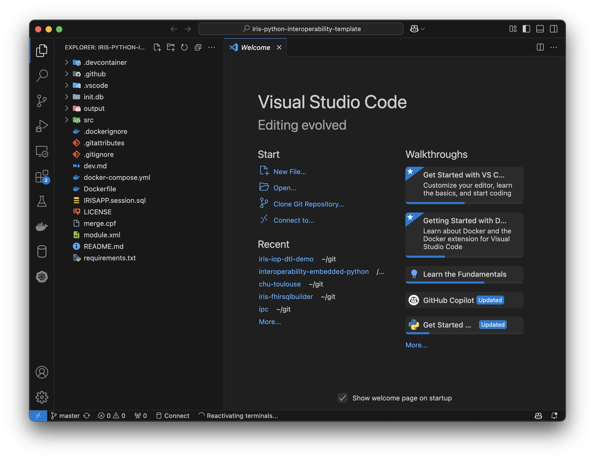
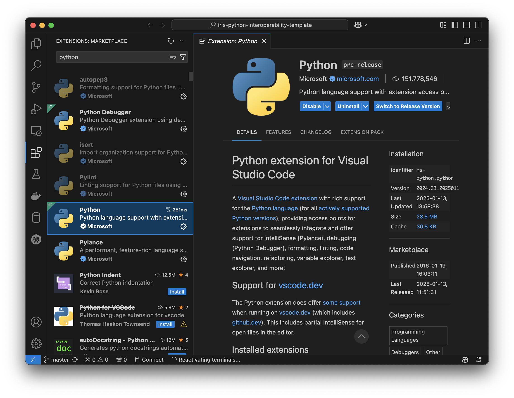
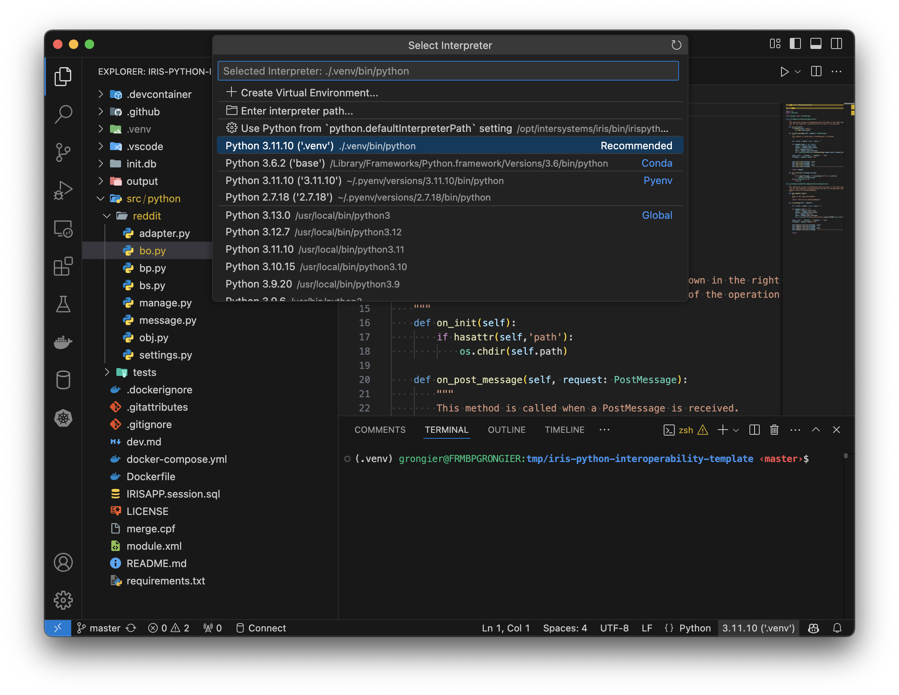
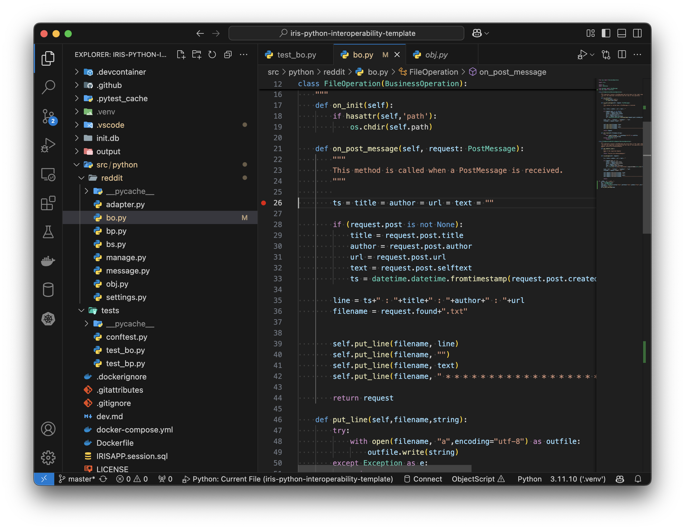
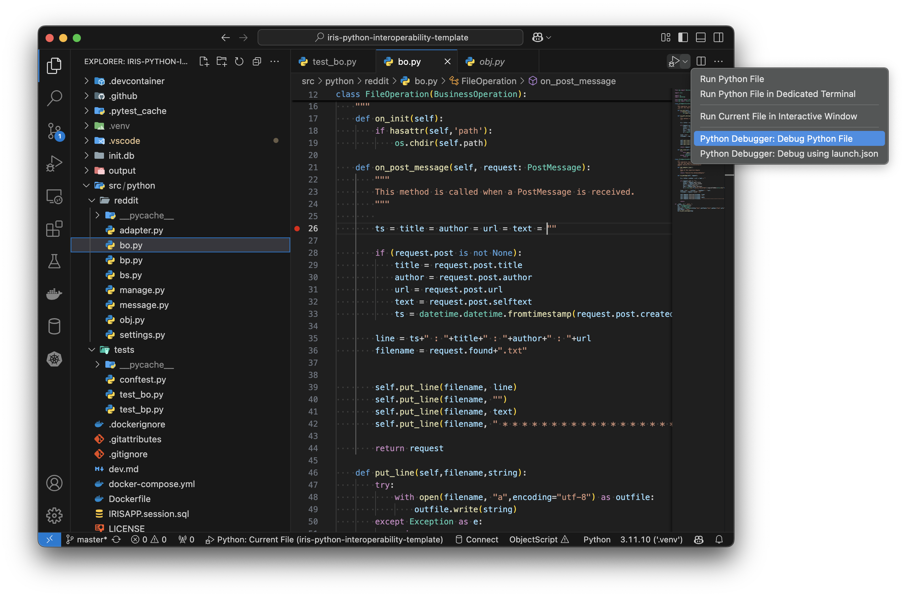
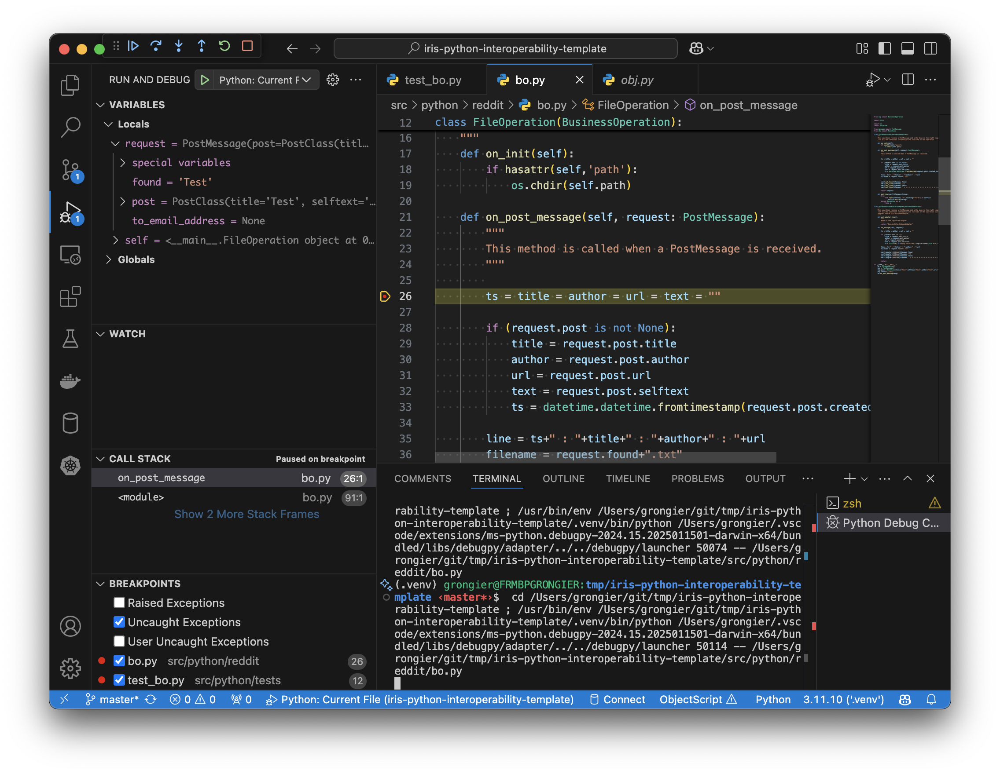

Debug
How to debug IoP code.
Before anything, I will put some context about IoP and IRIS.
Next I will show how to debug the code.
Finally, we will give some tips about debugging.
Context
IoP is a Python library that helps to build interoperability solutions with IRIS.
IoP is based on Embedded Python in IRIS.
Embedded Python is a feature of IRIS that allows you to run Python code inside IRIS.
That means the python code is not running by a python interpreter, but by the IRIS process.
That comes with some limitations, like the lack of a debugger. It's planned to have a debugger in the future. eg: IRIS 2025.2+.
Meanwhile, we have some ways to debug the code.
Debugging
Today (2025.2-), the best way to debug the code is to use an native python interpreter and run the code outside IRIS. This way you can use the python debugger.
The main issue with this approach is that you must have a local instance of IRIS to be able to run the code.
When I mean a local instance, it can be a local installation of IRIS, or a docker container running IRIS.
I will explain first with a local installation of IRIS. Then I will show how to do the same with a docker container.
Local Installation
To debug the code with a local installation of IRIS, you need to have the following:
- Local installation of IRIS
- Python interpreter compatible with the version of IRIS
- Iris embedded python wrapper
After you have all the requirements, you can start the IRIS instance and run the python code.
Debugging
To debug the code, you can use the python debugger.
Example with VsCode:
- Open the code in VsCode to an existing folder.
For example, you can use this git repository:
git clone https://github.com/grongierisc/iris-python-interoperability-template
Open the folder iris-python-interoperability-template in VsCode.
code iris-python-interoperability-template

- Install the python extension.
Go to the extensions tab and search for Python.

- Create a virtual environment and select it.
python -m venv .venv
source .venv/bin/activate
And select the virtual environment in VsCode.

- Install the dependencies.
pip install -r requirements.txt
- Run the code in debug mode.
Open the file src/python/reddit/bo.py, put a breakpoint in the line 26.

And run the code in debug mode.

And you can debug the code.

Docker Container
The general idea is the same as the local installation.
The main difference is that you need to have a attached VSCode to the docker container.
For that, you can use the Remote - Containers extension.
Then you can attach the VSCode to the docker container and follow the same steps as the local installation.
Tips
Use unit tests
The best way to debug the code is to use unit tests.
You can use the python unittest library to write unit tests or pytest.
You have examples in iris-python-interoperability-template.
Use if name == 'main'
You can use the if __name__ == '__main__': to run the code only when you run the python file.
Example:
def my_function():
print('Hello World')
if __name__ == '__main__':
my_function()
You also have examples in iris-python-interoperability-template.